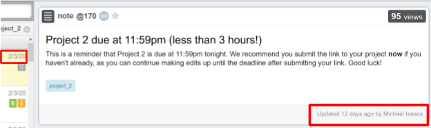

Introduction
For our class Winter 2020 Design 1: Design of Everyday Things, we decided to focus our project on improving some aspects of Piazza, an online forum where students and instructors post, answer, and search for class related questions and announcements. Our group of four students had extensive experience using Piazza through our classes, but we all agreed that there were some user interface and experience issues. Most of us had used Piazza mainly for STEM-focused classes (such as computer science, math, etc.), so we assumed that was the case for most other users.
We had a few overall goals in mind:
- Question-asking and finding flow is as efficient as possible.
- Redundancy of information across posts is minimized.
- Possible functions are clearly identified.

The Process
Data collecting procedure:
This project included collecting interview data about the product we were trying to redesign. You can read more by clickling the button below if interested!
We went around the UCSD campus and surrounding areas and interviewed 15 students and faculty. We first gathered some demographic information such as major, year, and Piazza proficiency level. Next, we hand them a laptop that’s open to a specific post in our Design 1 Piazza. We ask them to find certain information as if they were a student in the class and record the time until they provide some answer. We stopped the timer when they provided the expected answer, “I don’t know”, or “I’ll make a post”.
Click here to view the datasheetThe following is the order and description of tasks:
- What is the Week 3 Journal Prompt?
- The answer is found in one of the pinned posts at the top of the sidebar. This task was fairly simple so that the interviewee is able to get a little more familiar with the layout of Piazza if they had never used it before.
- What date is project 2 due?
- The current project was project 3, so information about project 2 would be further down the timeline. The interviewee would have to scroll the left side bar, use the search function, or click on the labeled folders at the top.
- When is project 4 due?
- Project 4 did not exist yet, so the interviewee would not be able to find a definitive answer. We wanted to see how long they would search for the answer before they said no project 4 existed, they didn’t know, or they would make a post.
- Do we have to source photos in this class?
- We used the word “source” here, because while there was no post with the term “source”, there was a post that used the synonym “citing”. We wanted to see if the interviewee realized the use of synonyms as Piazza’s search function does not provide results for similar terms or typos.
- What is the minimum page limit for Journals?
- There is no direct answer on Piazza, but the answer could be found by clicking the class rubric link in one of the pinned posts. We wanted to see how the interviewee, as a student of the class, would approach solving this problem.
These interviews gave us insight on what new or old users struggled with when searching for the answers.
Identifying Errors and Possible Solutions
Here are the main errors we observed from the interviewers and our own experience. I have also listed the solutions we brainstormed following the data collection process. We considered and combined these solutions into the final redesign.
1.) Incorrect Terms and Typos in the Search Bar
If the user were to input something with similar or wrong spelling, relevant or desired posts may not appear. So the user would have to have precise spelling/keywords. This issue could hinder search flow and efficiency. In Figure 1 below, there is a one character difference (space vs. dash) between the search terms. The results were very different: the “dash” search leads to results, but “space” dash leads to no results.
Possible solutions to improve the search function:
- Auto-correct or suggested searches based on input
- This fix could guide the user to the potential efficient first searches
- Spell Check Red Line (Figure 2)
- This fix provides the user with some sort of feedback on if they had spelled correctly.
- And if the user wants exact terminology, they could use “quotations” for exact search
2.) Too Much Scrolling!
Below the search bar, there’s a section where the users can scroll through posts by the date and time posted. The posts are very close together, and if there are a lot of posts, the user may not be able to pick up all the information shown in the previews. Therefore, they may skip over desired posts.

Possible to improve the scrolling function:
- Space out and enlarge the posts
3.) Unseen and Unused Folders
There is a feature at the top of Piazza that I had not noticed for a long time: the folders function. The folders are created by the instructors to place relevant information and posts together. This function is meant to help users better search for relevant information. However, as shown in the zoomed-in animation below, when the mouse hovers over one of the folders labeled “project_1”, the text color changes only slightly. The same happens for the other labels. To us, we thought that the function did not have a clear signifier to its existence. We figured that a function that can increase search efficiency should be more visible to users.

Possible to improve the folders function:
- Hovering over the label should have a bolder and more obvious change
- Labels should be a bolder color to stand out against the gray background
- The folder icon to the left is placed in front of each folder name
- The folder selected should be highlighted/underlined
4.) Confusing Dates
Posts on Piazza have certain sections that date when the post was made or updated. However, specific dates are not shown on the post page itself. Instead, they show that the post was made or updated “X days ago” at the bottom right. There’s an additional date section on each post preview in the scroll section. Because the text is fairly small and off to the side, we figured that users are more unlikely to look at them when reading through the contents of the post. In addition, if the post was made within a week of the current date, the boxed area on the left would be labelled by the day of the week (Monday, Tues, etc.) rather than by month/day/year. We thought that this inconsistency in the form of dates would be very confusing to the user.
Possible to improve the date display:
- Keep dates consistent with the format month/day/year
Trade-Offs
To approach these problems, we first used a brainstorm to guide our thoughts on the core functionalities of Piazza versus the constraints that it faces. This is shown in the mind map below:
Click the dropdowns below to learn more about the trade-offs that we explored:
Aesthetic versus Efficiency
Appearance is an important part of a user’s experience with a website. Aesthetic appeal directly contributes to user experience, and plays a role in retention of users, which is why it is so important to examine. In our opinion, Piazza as a website is not the most aesthetically pleasing. Piazza presents a lot of text and information on the page at once, rather than taking a more aesthetic approach to it, like using minimalism. Minimalism is often aesthetically pleasing and easy to use, because it lets the user engage with the product at the core level rather than clustering it with too much info at once. In other words, this plays into the trade-off signifiers versus cognitive load - showing more things can be easier for the user, but overload them with information, making the design worse. On the other hand, the appearance or aesthetic of the website can also have a role in affecting the efficiency, which indicates how quickly a user can find what they are looking for, as a certain design will have different signifiers and affordances. For example, as we described before, Piazza has some weak signifiers to the folders function. If the folders could help users more efficiently search for the desired information, their appearance/aesthetic should be able to draw the user's attention.
Features versus Efficiency
This trade off was primarily oriented towards the user search capabilities, and navigation as a whole. Making the application highly efficient makes it easy to use, and gets the user what they want right away, which is always a desirable outcome for overall user experience. However, features and the complexity that it comes with, while negative in its connotation, is implicit in the addition of capabilities that can directly improve user experience and keep a product sustainable. In the current market, improvement and iterating upon a product is essential to remaining relevant and continue to be consumed. With a lack of new and updated features, convincing new users to join the service can be hard, which is why most companies yield to the “featuritis” problem mentioned by Don Norman in chapter 7 of his book, “Design of Everyday Things.” This clash occurs in Piazza, with Piazza going towards more complexity than minimalism in terms of features, as shown by the variety of links, breadcrumbs, and filter options that are shown on the front page. This allows the user to tailor their search experience to their needs, but also introduces a sense of clutter that proved to confuse new users, as shown by our data when none of the new users tried the category or folder functions, or tried to distinguish using the pinned posts. This can be why complexity and clutter of features is often a negative aspect when considering a product, because designing for the vast majority is usually the goal.
Redesigning Piazza and Final Thoughts
Using the data, errors, and trade offs identified above, we decided to approach our redesign with some key pain points in mind. We wanted to match our pain points to possible solutions, and did this through a group brainstorming session. The main problems that we identified through user errors were: the category tabs not being visible, searches not yielding the desired results, the visibility of posts shown by the users scrolling past the desired result, the search function not being supportive of synonyms and misspelled words, and the dates being hard to tell through the post itself. These problems were all aspects that we wanted to address together as a group, and to model through low fidelity prototypes.
For comparison, here is what Piazza currently looks like:

And here is what my group's redesign (constructed in Figma) looked like:

Notice how the layout looks a lot easier on the eyes! The folders function and certain labels near the top stand out more; the font and posts are bolder and spaced out; a related posts section was added; the dates are no longer confusing; overall, it is more user friendly.
And here is a GIF stepping through the redesigned folders function:

If a site is not easy to navigate and certain functions are rarely utilized, then the site should be redesigned to replace and update functions to be more useful and time efficient. With this redesign, Piazza could not only be an easy way to communicate with other students and instructors but also known for its aesthetic and user experience.